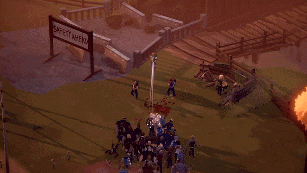
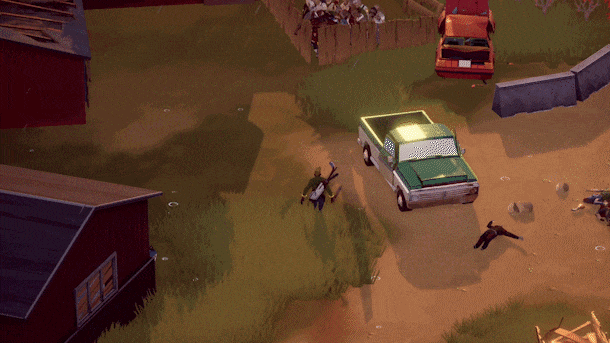
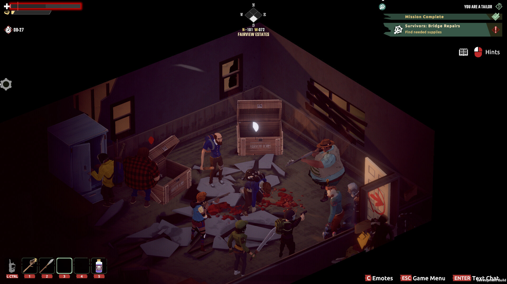
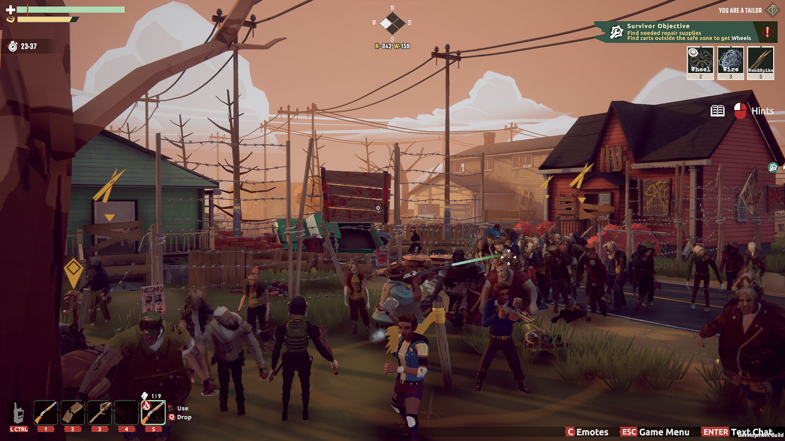
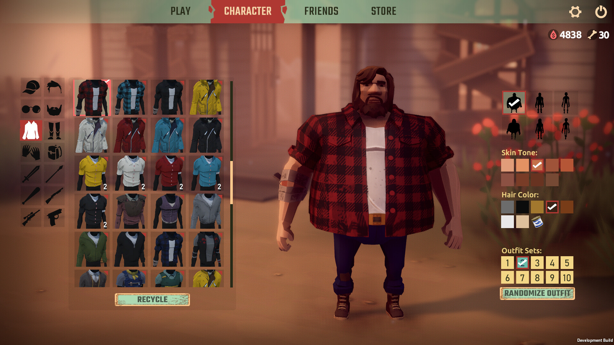
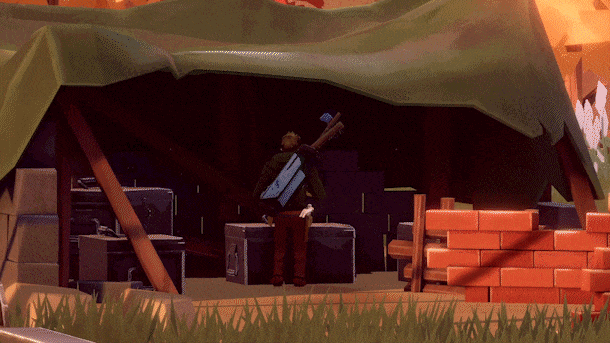
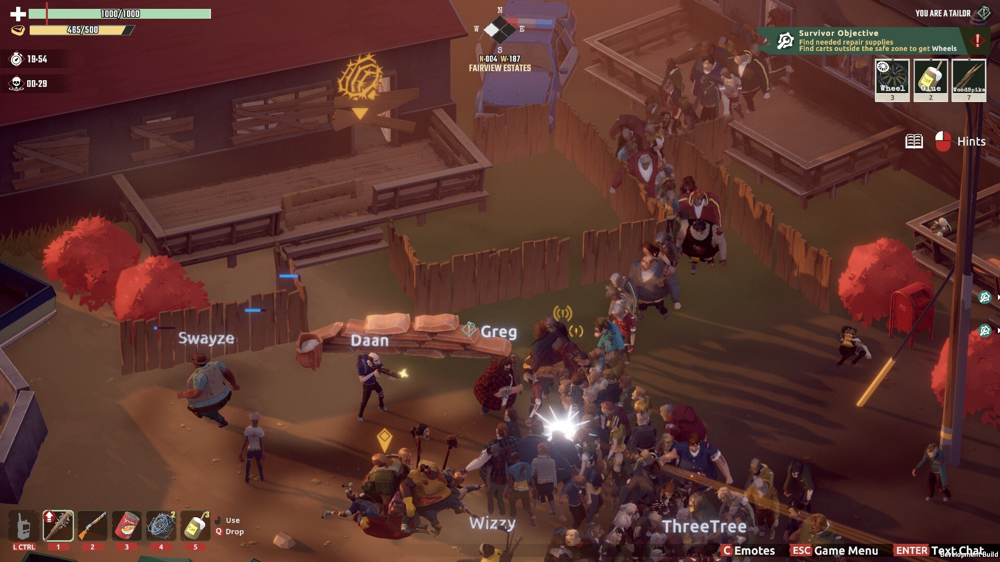
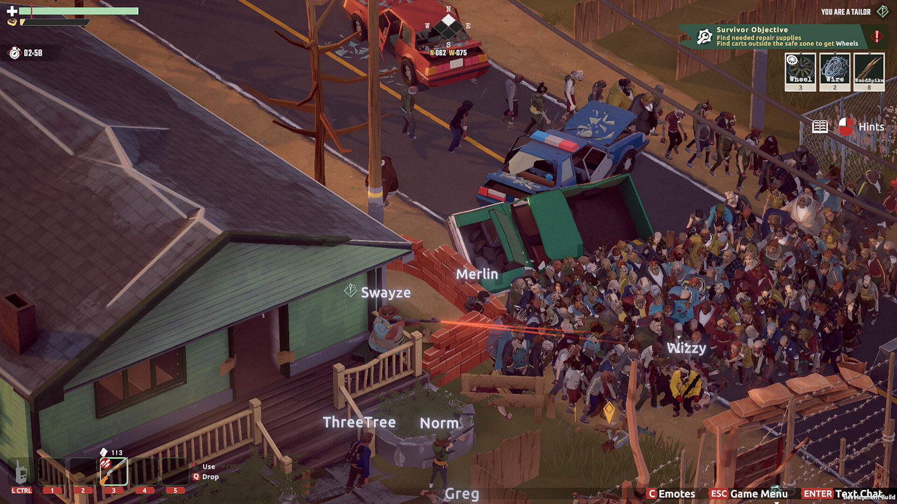
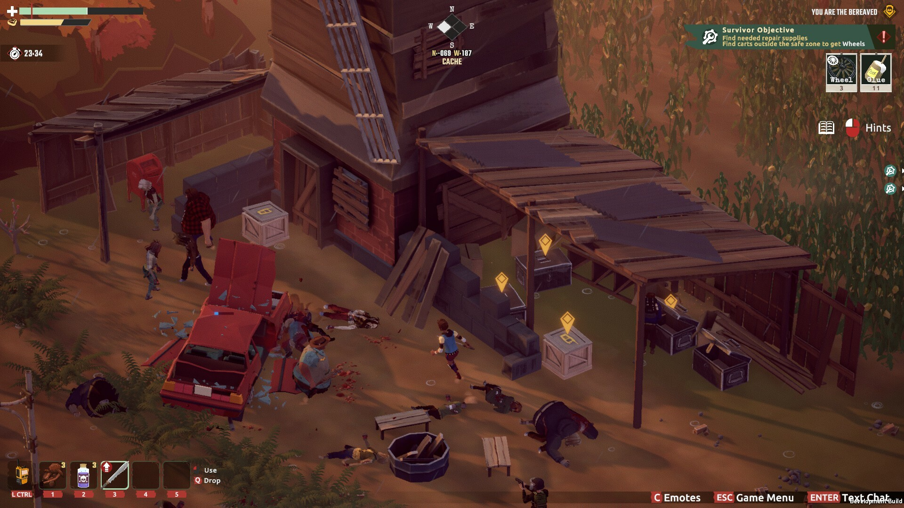
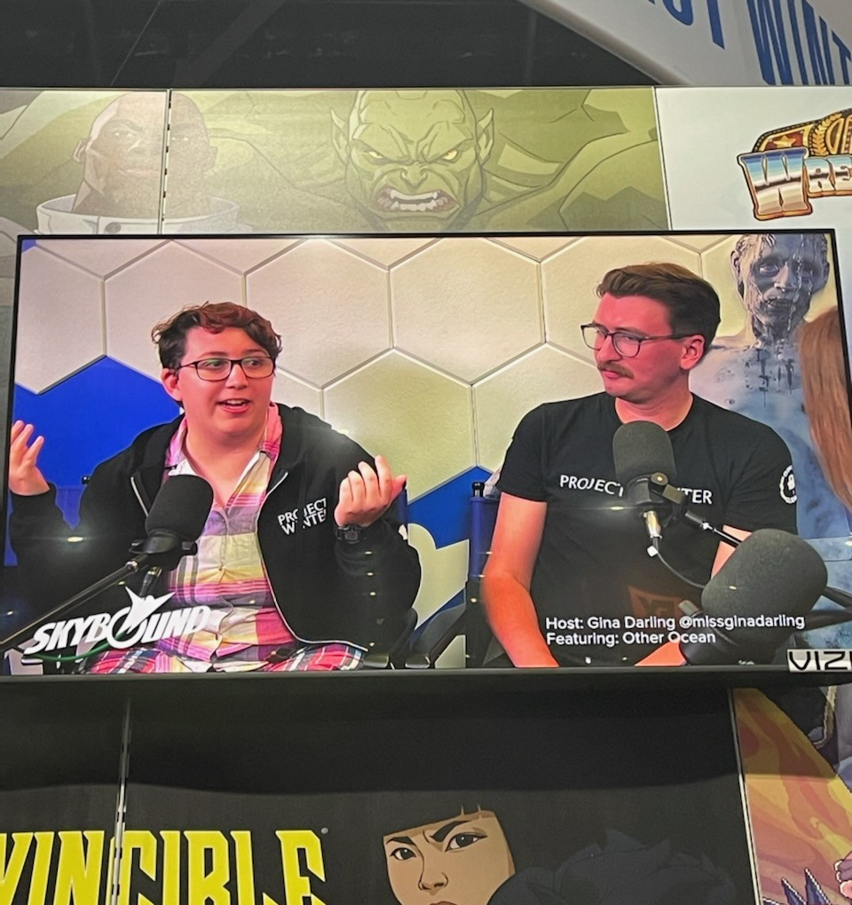

Game Designer • Community Coordinator
Released in September 2023, this title was an online multiplayer survival-social deduction action game set in the world of The Walking Dead on PC.

4-8 players mow down Walkers with guns, craft traps, and use proximity voice chat to fix a generator and root out the secret killer in their midst.

As lead designer, I spearheaded gameplay design, level design, UX, and more. It was a blend of detailed documentation for IP holder submission and hands-on editor work for constructing levels and prototyping gameplay.

I worked with 1-2 other designers and regularly met with Skybound Entertainment and Other Ocean leadership for stakeholder updates on design.

This game was based on the framework of a previous Other Ocean title. It required close collaboration with code leadership and creative thinking to solve problems that we couldn't tackle with traditional solutions.

I read every issue of The Walking Dead comics so the world and themes would inform my design and allow me to view the game through a true fan's eyes.

The secret traitors sabotaging the mission use traps, weapons, and special sabotages. Designing them involved exploration of social dynamics and pacing - what betrayals felt thrilling, and what seemed cheap?

When players die, they become Walkers and influence other undead to help or hinder the living. It was a delicate balance to keep players engaged post-mortem while making sure their influence felt fair to alive players.

Audience expectations required big swarms of Walkers, which our framework struggled to allow. My solution was to design our levels to funnel players and Walkers into claustrophobic firefights that made the swarms seem bigger than they were.

Set in an open world, design focused on putting the tools for epic moments of heroism and treachery in the hands of the players, creating a sandbox of traps, weapons, environmental hazards, and of course, Walkers.

Other Ocean sent me to San Diego Comic Con to talk to press, and later had me lead hands-on press play sessions. It was key to be able to translate the game design details that I knew so well into language that would excite our audience!